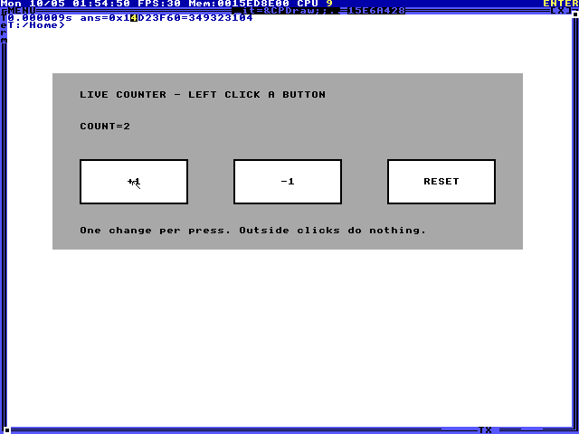

Live counter panel
Task interactive_counter_panel
Grade: needs review Execution: completed · Steps: 26 · Elapsed: 227.455 s · Score: —
Review the full action and screenshot trajectory. The agent must compile its own HolyC implementation, install a live task drawing callback, and render visible +1, -1, RESET buttons and an initial COUNT=0 inside the shell window. No implementation is supplied. Verify that genuine left-clicks on the rendered buttons cause the observed state sequence: three increments reach 3, one decrement reaches 2, reset reaches 0, an outside click leaves 0 unchanged, and two further increments reach 2. Each distinct press changes the count at most once. Intermediate increment states provide reviewable progress even when the full sequence is incomplete. The panel must remain live throughout, with the final COUNT=2 visible. Check responsiveness and absence of callback faults or a frozen guest. Accept any clear layout within the shell interior; account for the window's drawing origin when assessing button hit-testing. Typed count values, static screenshots, or recompiling state between the demonstrated clicks do not establish interactive behavior. A final screenshot alone cannot prove the state transitions or live callback. This task requires trajectory review and has no automatic pass score.
input tokens: 60248, output tokens: 3107, total tokens: 63355
- Manual review required; no automatic success claim was made.
